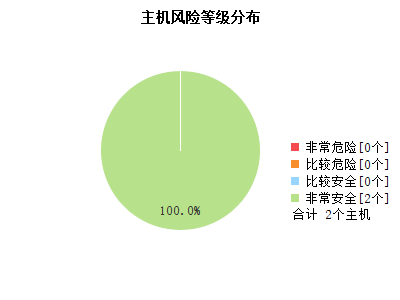
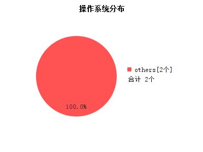
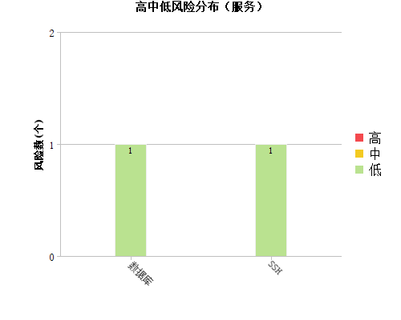
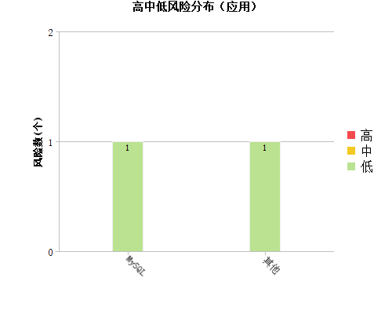
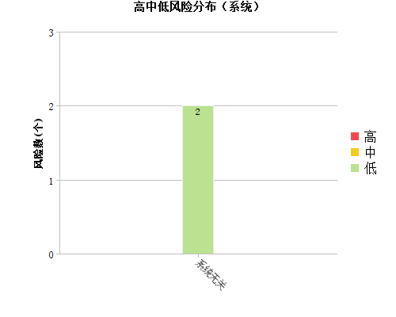
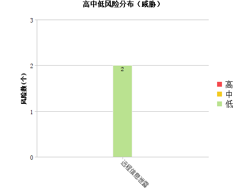
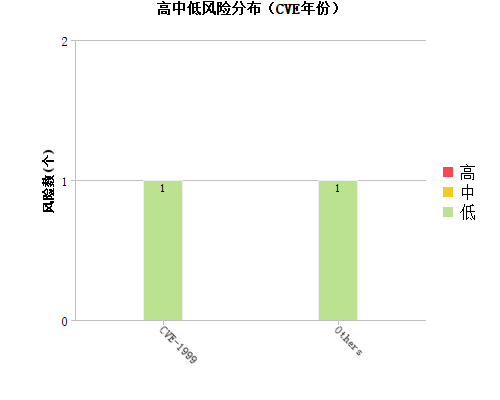

1.综述信息
1.1任务信息
| 网络风险 | 比较安全（1.0分） |
|---|
|
|
1.2风险分布
1.2.1主机风险分布

1.2.2详细风险分布
-
1.3资产综述
1.3.1操作系统
 |
|
2.风险类别
2.1漏洞风险类别
2.1.1服务
 |
|
2.1.2应用
 |
|
2.1.3系统
 |
|
2.1.4威胁
 |
|
2.1.5时间
|
2.1.6CVE年份
 |
|
3.主机信息
3.1主机风险等级列表
| IP地址 | 主机名 | 操作系统 | 主机 风险值 |
|---|---|---|---|
 119.254.84.182 119.254.84.182 |
1.0 | ||
| 119.254.84.180 |
1.0 | ||
| 合计 | 1.0 | ||
4.漏洞信息
4.1漏洞分布
漏洞类别： 低风险[2]
低风险[2]
低风险[2] | 序号 | 漏洞名称 | 影响主机个数 | 影响主机百分比 | 出现次数 |
|---|---|---|---|---|
| 1 |
SSH版本信息可被获取
|
2/2 | 100% | 2 |
| 2 |
远程MySQL/MariaDB/Percona Server版本泄露
|
1/2 | 50% | 1 |
| 合计 | 3 | |||
5.脆弱帐号
6.参考标准
6.1单一漏洞风险等级评定标准
| 危险程度 | 危险值区域 | 危险程度说明 |
 高 高 |
7 <= 漏洞风险值 <= 10 | 攻击者可以远程执行任意命令或者代码，或对系统进行远程拒绝服务攻击。 |
 中 中 |
4 <= 漏洞风险值 < 7 | 攻击者可以远程创建、修改、删除文件或数据，或对普通服务进行拒绝服务攻击。 |
| 低 |
0 <= 漏洞风险值 < 4 | 攻击者可以获取某些系统、服务的信息，或读取系统文件和数据。 |
说明：
漏洞的风险值兼容CVSS评分标准。
6.2主机风险等级评定标准
| 主机风险等级 | 主机风险值区域 |
| 非常危险 | 7.0 <= 主机风险值 <= 10.0 |
 比较危险 比较危险 |
5.0 <= 主机风险值 < 7.0 |
 比较安全 比较安全 |
2.0 <= 主机风险值 < 5.0 |
| 非常安全 |
0.0 <= 主机风险值 < 2.0 |
说明：
- 按照远程安全评估系统的主机风险评估模型计算主机风险值。根据得到的主机风险值参考“主机风险等级评定标准”标识主机风险等等级。
- 将主机风险等级按照风险值的高低进行排序，得到非常危险、比较危险、比较安全、非常安全四种主机风险等级。
- 用户可以根据自己的需要修订主机风险等级中的主机风险值范围。
6.3网络风险等级评定标准
| 网络风险等级 | 网络风险值区域 |
| 非常危险 | 8.0 <= 网络风险值 <= 10.0 |
| 比较危险 |
5.0 <= 网络风险值 < 8.0 |
| 比较安全 |
1.0 <= 网络风险值 < 5.0 |
| 非常安全 |
0.0 <= 网络风险值 < 1.0 |
说明：
- 按照远程安全评估系统的网络风险评估模型计算该网络风险值。根据得到的网络风险值参考“网络风险等级评定标准“标识网络风险等等级。
- 将网络风险等级按照风险值的高低进行排序，得到非常危险、比较危险、比较安全、非常安全四种网络风险等级。
- 用户可以根据自己的需要修订网络风险等级中的网络风险值范围。
6.4安全建议
据市场研究公司 Gartner 研究报告称"实施漏洞管理的企业会避免近 90% 的攻击"。可以看出，及时的漏洞修补可以在一定程度上防止病毒、攻击者的威胁。
远程安全评估系统建议对存在漏洞的主机参考附件中提出的解决方案进行漏洞修补、安全增强。
- 建议所有 Windows 系统使用"Windows Update"进行更新。
- 对于大量终端用户而言，可以采用 WSUS 进行自动补丁更新，也可以采用补丁分发系统及时对终端用户进行补丁更新。
- 对于存在弱口令的系统，需在加强使用者安全意识的前提下，督促其修改密码，或者使用策略来强制限制密码长度和复杂性。
- 对于存在弱口令或是空口令的服务，在一些关键服务上，应加强口令强度，同时需使用加密传输方式，对于一些可关闭的服务来说，建议关闭该服务以达到安全目的。
- 对于UNIX系统订阅厂商的安全公告，与厂商技术人员确认后进行漏洞修补、补丁安装、停止服务等。
- 由于其他原因不能及时安装补丁的系统，考虑在网络边界、路由器、防火墙上设置严格的访问控制策略，以保证网络的动态安全。
- 建议网络管理员、系统管理员、安全管理员关注安全信息、安全动态及最新的严重漏洞，攻与防的循环，伴随每个主流操作系统、应用服务的生命周期。
- 建议采用远程安全评估系统定期对网络进行评估，真正做到未雨绸缪。
远程安全评估系统建议对存在不合规检查项的主机参考对应的检查点详情中提出的调整方案和标准值进行修正。